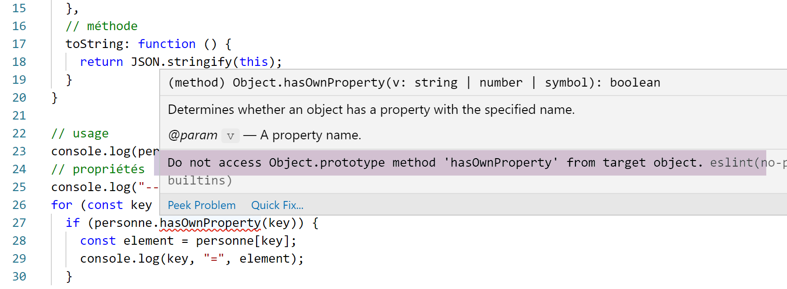

5. Letterlijke objecten
We noemen hier ‘letterlijke objecten’ objecten die letterlijk in de code zijn gedefinieerd. JavaScript kent het begrip ‘klasse’ en ‘instantie van een klasse’. Het is dus niet dit type object waar we het nu over hebben.

5.1. script [obj-01]
Hier bespreken we de belangrijkste eigenschappen van letterlijke objecten. De belangrijkste is dat het object via een pointer wordt gemanipuleerd.
'use strict';
// een leeg object
const obj1={};
// de eigenschappen van het object kunnen dynamisch worden aangemaakt
obj1.prop1="abcd";
console.log('obj1=',obj1);
// andere eigenschap
obj1.prop2=[1,2,3];
console.log("obj1=",obj1);
// andere eigenschap met een andere notatie
obj1['prop3']=true;
console.log("obj1=",obj1);
// obj1 is een verwijzing naar het object (pointer), niet het object zelf
const obj2=obj1;
// obj2 en obj1 verwijzen naar hetzelfde object
obj2.prop1="xyzt";
console.log("obj1=",obj1);
console.log("obj2=",obj2);
// eigenschappen kunnen variabelen zijn
const var1='prop1';
console.log('prop1=',obj1[var1]);
Uitvoering
[Running] C:\myprograms\laragon-lite\bin\nodejs\node-v10\node.exe "c:\Temp\19-09-01\javascript\objets\obj-01.js"
obj1=[object Object]
obj1= { prop1: 'abcd', prop2: [ 1, 2, 3 ] }
obj1= { prop1: 'abcd', prop2: [ 1, 2, 3 ], prop3: true }
obj1= { prop1: 'xyzt', prop2: [ 1, 2, 3 ], prop3: true }
obj2= { prop1: 'xyzt', prop2: [ 1, 2, 3 ], prop3: true }
prop1= xyzt
Opmerkingen
- regel 3 van de code: een object wordt via een pointer gemanipuleerd. [obj1] is dus een pointer. Het wijzigen van het object waarnaar wordt verwezen, heeft geen invloed op de pointer [obj1]. Daarom wordt, net als bij arrays, een objectreferentie gedeclareerd met het sleutelwoord [const];
- regel 6 van de code: net als bij arrays kan [console.log] objecten weergeven;
- regel 11 van de code: obj1.prop3 kan worden herschreven als obj1.[‘prop3’]. Deze laatste notatie is handig wanneer ‘prop3’ in feite een variabele is (regels 20-21);
- regels 13-18 van de code: laten zien dat de instructie [obj2=obj1] een referentiekopie van het object is en niet het object zelf;
5.2. script [obj-02]
Dit script laat zien dat de eigenschappen van een object een object als waarde kunnen hebben. We hebben dan te maken met objecten met meerdere niveaus. Ook wordt het globale object [JSON] geïntroduceerd, waarmee conversies tussen objecten en tekenreeksen kunnen worden uitgevoerd.
''use strict';
// een object met meerdere niveaus
const personne = {
prénom: "martin",
âge: 12,
père: {
prénom: "paul",
âge: 45
},
mère: {
prénom: "micheline",
âge: 42
}
}
// toegang tot eigenschappen
console.log("prénom personne=", personne.prénom);
console.log("prénom mère=", personne.mère.prénom);
personne.mère.âge = 40;
console.log("âge mère=", personne.mère.âge);
// console.log kan objecten weergeven
console.log("personne=", personne);
console.log("mère=", personne.mère);
// men kan ook de tekenreeks jSON van het object weergeven
let json = JSON.stringify(personne);
console.log("jSON=", json);
// men kan de jSON opnieuw lezen
let personne2 = JSON.parse(json);
console.log("père=", personne2.père);
Opmerkingen
- regel 24: omzetting van een JavaScript-object naar een tekenreeks jSON;
- regel 27: omzetting van een tekenreeks jSON naar een JavaScript-object;
Uitvoering
[Running] C:\myprograms\laragon-lite\bin\nodejs\node-v10\node.exe "c:\Temp\19-09-01\javascript\objets\obj-02.js"
prénom personne= martin
prénom mère= micheline
âge mère= 40
personne= { 'prénom': 'martin',
'leeftijd': 12,
'vader': { 'voornaam': 'paul', 'leeftijd': 45 },
'moeder': { 'voornaam': 'micheline', 'leeftijd': 40 } }
mère= { 'prénom': 'micheline', 'âge': 40 }
jSON= {"prénom":"martin","âge":12,"père":{"prénom":"paul","âge":45},"mère":{"prénom":"micheline","âge":40}}
père= { 'prénom': 'paul', 'âge': 45 }
Opmerkingen
- regel 10: in een tekenreeks jSON moeten de eigenschappen, net als de waarden van het type tekenreeks, verplicht tussen aanhalingstekens staan;
5.3. script [obj-03]
Dit script introduceert het begrip getter/setter van een eigenschap van een object:
'use strict';
// getters en setters van een object
const personne = {
// getter
get nom() {
console.log("getter nom");
return this._nom;
},
// setter
set nom(unNom) {
console.log("setter nom");
this._nom = unNom;
}
};
// setter
personne.nom = "Hercule";
// getter
console.log(personne.nom);
// het object zelf
console.log("personne=", personne);
// dit belet niet dat de eigenschap [_nom] rechtstreeks kan worden benaderd
personne._nom = "xyz";
console.log("personne=", personne);
Opmerkingen
- regels 5-7: definitie van een [getter], een functie die doorgaans de waarde van een eigenschap van het object retourneert, maar in feite alles kan retourneren. Het sleutelwoord [function] wordt vervangen door het sleutelwoord [get];
- regel 7: de getter retourneert de eigenschap [_nom]. We zien dat deze niet hoeft te worden gedeclareerd;
- regels 10-13: definitie van een [setter], een functie die doorgaans de ontvangen waarde toewijst aan een eigenschap van het object, maar die in feite van alles kan doen. Het sleutelwoord [function] wordt vervangen door het sleutelwoord [set]. [setter] kan worden gebruikt om de geldigheid te controleren van de waarde die als parameter wordt doorgegeven aan [setter];
- regel 16: de functie [set nom] wordt impliciet aangeroepen;
- regel 18: de functie [get nom] wordt impliciet aangeroepen;
- regel 22: laat zien dat het gebruik van getter/setter afhankelijk is van de keuze van de ontwikkelaar. Als de ontwikkelaar de naam kent van de eigenschap die hiermee wordt beheerd, kan hij deze rechtstreeks benaderen;
Uitvoering
[Running] C:\myprograms\laragon-lite\bin\nodejs\node-v10\node.exe "c:\Temp\19-09-01\javascript\objets\obj-03.js"
setter nom
getter nom
Hercule
personne= { nom: [Getter/Setter], _nom: 'Hercule' }
personne= { nom: [Getter/Setter], _nom: 'xyz' }
Let op regels 5-6: [console.log] geeft ook de eigenschappen weer die functies zijn.
5.4. script [obj-04]
Dit script toont drie manieren om de namen van de eigenschappen van een object te schrijven en twee manieren om er toegang toe te krijgen.
'use strict';
// de namen van de eigenschappen van een object kunnen letterlijke waarden zijn [nom], tussen apostrofs staan ['nom']
// of tussen aanhalingstekens ["nom"]
// letterlijke waarden
const obj1 = {
nom: "martin",
prénom: "jean"
};
console.log("prénom=", obj1.prénom);
// omgeven door apostrofs
const obj2 = {
'naam': "martin",
'voornaam': "jean"
};
console.log("nom=", obj2.nom);
// tussen aanhalingstekens
const obj3 = {
"nom": "martin",
"prénom": "jean"
};
// twee mogelijke syntaxisvormen om toegang te krijgen tot de eigenschap [nom]
console.log("nom=", obj3.nom);
console.log("nom=", obj3['nom']);
Uitvoering
[Running] C:\myprograms\laragon-lite\bin\nodejs\node-v10\node.exe "c:\Temp\19-09-01\javascript\objets\obj-04.js"
prénom= jean
nom= martin
nom= martin
nom= martin
5.5. script [obj-05]
Het script laat zien dat de eigenschappen van een letterlijk object functies kunnen zijn. Dit komt dan heel dicht in de buurt van een klasse-instantie, waarbij we zowel eigenschappen als methoden hebben.
'use strict';
// een object kan eigenschappen van het type [function] hebben
const personne = {
// eigenschappen
prénom: "martin",
âge: 12,
père: {
prénom: "paul",
âge: 45
},
mère: {
prénom: "micheline",
âge: 42
},
// methode
toString: function () {
return JSON.stringify(this);
}
}
// gebruik
console.log("personne=", personne);
console.log("personne.toString=", personne.toString());
- regels 17-19: een interne methode van het object. Hierin wordt toegang verkregen tot de eigenschappen van het object via het sleutelwoord [this] (regel 18). [this] verwijst naar het object zelf, [this.prénom] naar de eigenschap [prénom] daarvan;
Uitvoering
[Running] C:\myprograms\laragon-lite\bin\nodejs\node-v10\node.exe "c:\Temp\19-09-01\javascript\objets\obj-05.js"
personne= { 'prénom': 'martin',
'leeftijd': 12,
'vader': { 'voornaam': 'paul', 'leeftijd': 45 },
'moeder': { 'voornaam': 'micheline', 'leeftijd': 42 },
toString: [Function: toString] }
personne.toString= {"prénom":"martin","âge":12,"père":{"prénom":"paul","âge":45},"mère":{"prénom":"micheline","âge":42}}
5.6. script [obj-06]
Dit script laat zien hoe je toegang kunt krijgen tot de eigenschappen van een object wanneer je de namen daarvan niet van tevoren kent.
'use strict';
// een object kan eigenschappen van het type [function] hebben
let personne = {
// eigenschappen
prénom: "martin",
âge: 12,
père: {
prénom: "paul",
âge: 45
},
mère: {
prénom: "micheline",
âge: 42
},
// methode
toString: function () {
return JSON.stringify(this);
}
}
// gebruik
console.log(personne);
// eigenschappen
console.log("-----------------------");
for (const key in personne) {
if (personne.hasOwnProperty(key)) {
const element = personne[key];
console.log(key, "=", element);
}
}
// om de eslint-waarschuwing te omzeilen (1)
console.log("-----------------------");
for (const key in personne) {
if (Object.prototype.hasOwnProperty.call(personne, key)) {
const element = personne[key];
console.log(key, "=", element);
}
}
// om de ESLint-waarschuwing te omzeilen (2)
console.log("-----------------------");
for (const key in personne) {
// eslint-disable-next-line no-prototype-builtins
if (personne.hasOwnProperty(key)) {
const element = personne[key];
console.log(key, "=", element);
}
}
Opmerkingen
- regels 26-31: de code waarmee je de lijst met eigenschappen van een object kunt ophalen, zonder de methoden. Voor deze code geldt een waarschuwing van ESLint:

- regels 32-39: de code waarmee de waarschuwing van ESLint kan worden omzeild. Hierbij wordt gebruikgemaakt van het prototype van de klasse [Object];
- regels 41-47: of we schakelen de waarschuwing gewoon uit (regel 43);
5.7. script [obj-07]
Het script [obj-07] laat zien hoe een object kan worden gedestructureerd:
''use strict';
// destrukturering
// letterlijke waarden
const obj1 = {
nom: "martin",
prénom: "jean"
};
// ontmanteling van obj1 in variabelen [n,p]
const { nom: n, prénom: p } = obj1;
console.log("n=", n, "p=", p);
// ontmanteling van obj1 in variabelen [n2,p2]
function f({ nom: n2, prénom: p2 }) {
console.log("f-n2=", n2, "f-p2=", p2);
}
f(obj1);
// ontleding van obj1 in variabelen [nom,prénom]
function g({ nom: nom, prénom: prénom }) {
console.log("g-nom=", nom, "g-prénom=", prénom);
}
g(obj1);
// ontleding van obj1 in variabelen [nom,prénom]
// met verkorte notatie gelijk aan h({naam:naam,voornaam:voornaam})
function h({ nom, prénom }) {
console.log("h-nom=", nom, "h-prénom=", prénom);
}
h(obj1);
Opmerkingen
- regel 11: het zijn de accolades {} die het ontleden mogelijk maken. De syntaxis
const { nom: n, prénom: p } = obj1
maakt twee variabelen aan, [n] en [p], en komt overeen met:
const n = obj1.nom
const p = obj1.prénom
De declaratie zou als volgt kunnen luiden:
const { nom => n, prénom => p } = obj1
om erop te wijzen dat de waarden van de attributen [nom, prénom] in de variabelen [n, p] worden opgeslagen;
- de ontledingsbewerking wordt herhaald op de regels 15, 21 en 28. Telkens geven de accolades {} aan dat er een object in variabelen wordt ontleed;
- regel 28 kan verwarrend zijn. Het is een afkorting voor de notatie:
function h({ nom : nom, prénom : prénom })
De resultaten van de uitvoering zijn als volgt:
5.8. script [obj-08]
Het script [obj-08] laat zien hoe je een kopie van een object kunt maken:
'use strict'
// klonen van objecten
const obj1 = {
nom: "martin",
prénom: "jean"
};
// kloon (kopie) van obj1 met de spread-operator
const obj2 = { ...obj1 }
// controles
// obj2 verwijst naar een kopie van obj1
console.log("obj2===obj1 :", obj1 === obj2)
console.log("obj2=", obj2)
- regel 10: de kopieerbewerking van het object [obj1]. De operator ... wordt een spread-operator genoemd;
De resultaten van de uitvoering zijn als volgt:
- regel 1: laat zien dat de verwijzingen [obj1] en [obj2] niet naar hetzelfde object verwijzen;
- regel 2: laat zien dat het object waarnaar [obj2] verwijst, een kopie is van het object waarnaar [obj1] verwijst;
5.9. Conclusion
De scripts in deze paragraaf hebben aangetoond dat het letterlijke object in JavaScript veel weg heeft van het klasse-instantieobject in objectgeoriënteerde talen. We kunnen er eigenschappen, methoden en getters/setters in definiëren. Het is een dynamisch object waarvan de eigenschappen tijdens de uitvoering kunnen worden gedefinieerd. Het gedraagt zich dan als een woordenboek waarvan de elementen van elk type kunnen zijn, en met name van het type [fonction].